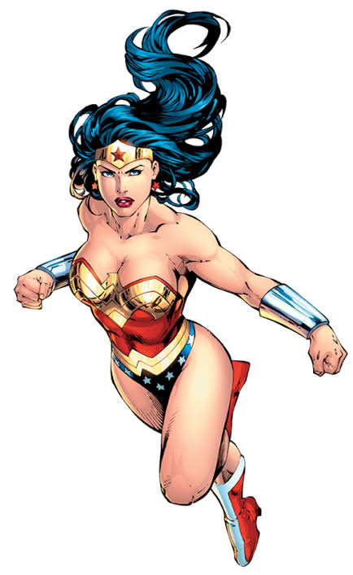
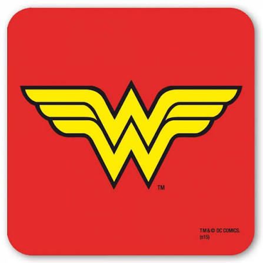

Wonder Woman est une super-héroïne de bande dessinée américaine créée par William Moulton Marston (sous le pseudonyme de Charles Moulton ).
Elle apparaît pour la première fois en octobre 1941 dans All Star Comics #8 et à cette époque, est l'une des premières super-héroïnes.
Dans la plupart des adaptations, Wonder Woman est la princesse Diana d'une tribu d'Amazones dont les origines sont liées à la mythologie grecque.
